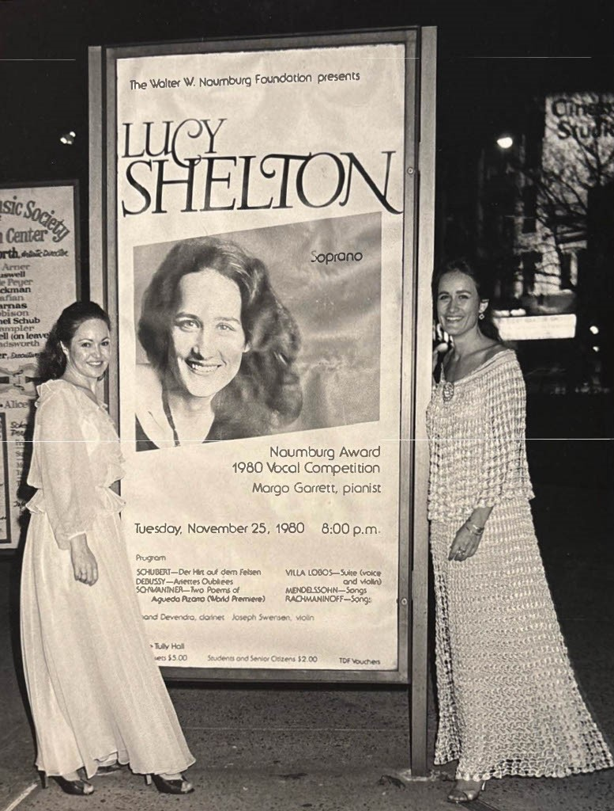

Excerpt from an online interview from 21 October 2024 with Chanda VanderHart.
Audio Files - Garrett Students and Colleagues
Excerpts from 6 online interviews with Lydia Brown, Jonathan Feldman, Jane Olian & Donna Gill , Cameron Stowe, Erika Switzer, and Jonathan Ware in 2024.
Music and Remembrance: A Celebration of Great Partnerships'
Kevin Lynn (photographer).
Juilliard Concert Programs
Scans of 3 concert programs featuring Margo Garrett at Juilliard.
With Lucy Shelton, Alice Tully Hall, 1980
Gwin Shelton (photographer): Lucy's mother took this duo snapshot after Shelton's debut recital, after winning the Naumburg International Competition together.

Carnegie Hall
Jane Olian (photographer). 27 April 1991, following a recital with Kathleen Battle.
Masterclass at Juilliard
Courtesy of the Juilliard Archives. This scan may not be reproduced, published, or displayed without permission.